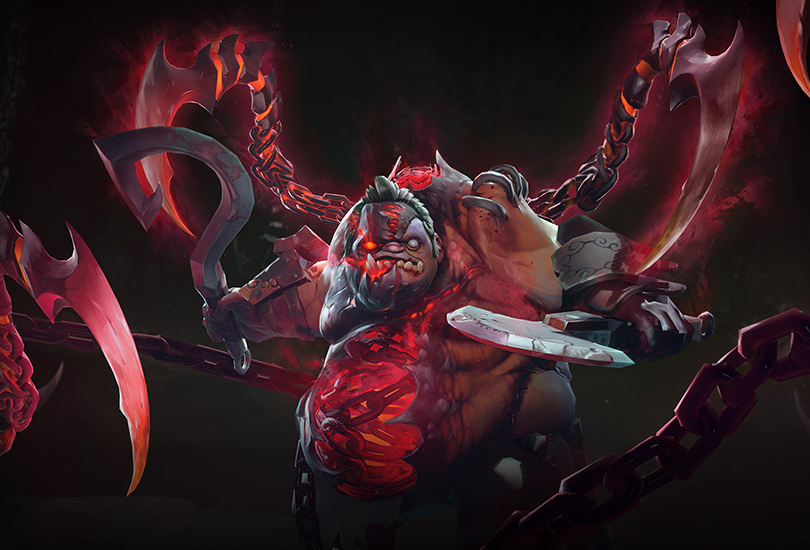

The Feast of Abscession Update
With today’s update, the butcher’s got a whole new set of tools as the Pudge Arcana makes its grand debut. Featuring all-new custom animations and effects—including multiple Dismember animations, a Hook Streak counter, hundreds of new VO responses, and more—the Feast of Abscession gives Pudge a host of new ways to sink his hooks into all that fresh meat wandering the battlefield.
After the intense selection process that culminated in Pudge’s slim Arcana Vote victory at The International, it seems only fair that the triumphant hero recognize his vanquished foe. With that in mind, Pudge can unlock a second style for his Arcana by winning 12 games when opposed by Rubick on the other team. Armed with his new hooks, and even new Rubick-specific VO responses, it’s only a matter of time before the butcher collects his due.
Check out The Feast of Abscession Update page for more information on all this new Arcana has to offer.
The International 2018 Tickets and Venue

or the first time ever, the battle for the Aegis of Champions will be waged on Canadian soil, as The International Dota 2 Championships invite the world’s top Dota teams to face off at Rogers Arena in Vancouver, British Columbia on Monday, August 20th through Saturday, August 25th.
Tickets sales begin on Friday, March 23 at 10:00 AM and 10:00 PM PDT, with two ticket types available. The Midweek ticket—available for $125 CAD—will grant attendance to the first four days of the event, August 20th – 23rd. The Finals ticket—available for $250 CAD—will grant access to the last two days, August 24th and 25th.
Check out the Ticketing FAQ here for more information.
Seattle: March 23rd at 10AM and 10PM
Rio de Janeiro: March 23rd at 2PM and March 24th at 2AM
London: March 23rd at 5PM and March 24th at 5AM
Berlin: March 23rd at 6PM and March 24th at 6AM
Moscow: March 23rd at 8PM and March 24th at 8AM
Beijing: March 24th at 1AM and 1PM
Singapore: March 24th at 1AM and 1PM
Seoul: March 24th at 2AM and 2PM
Sydney: March 24th at 4AM and 4PM